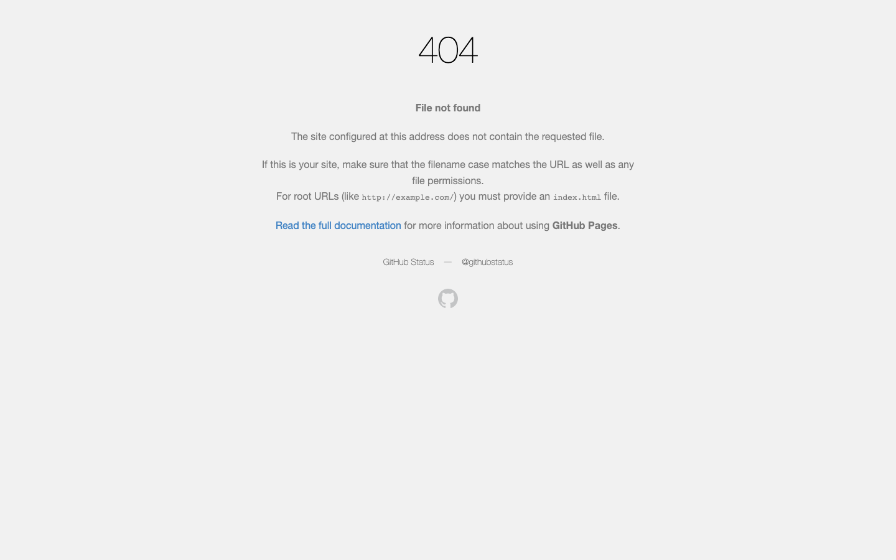
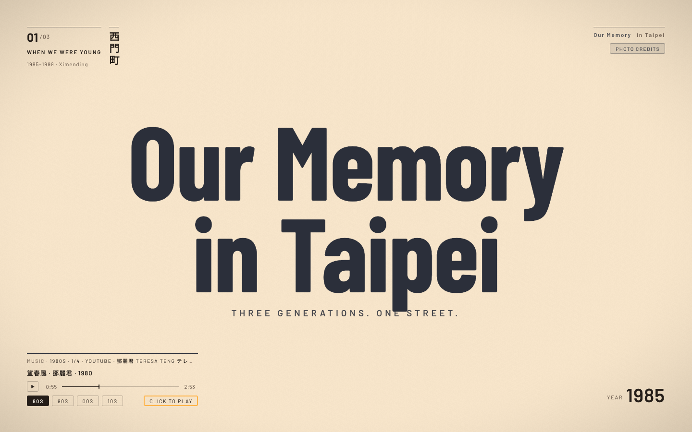
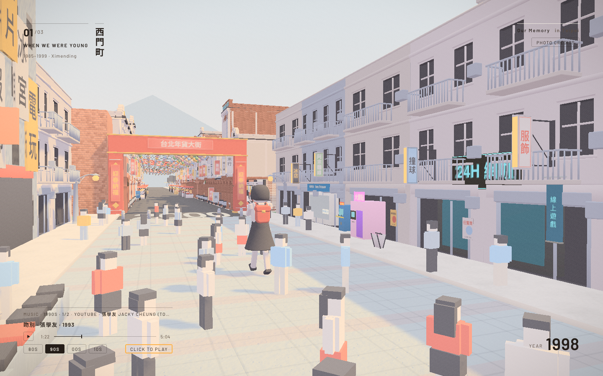
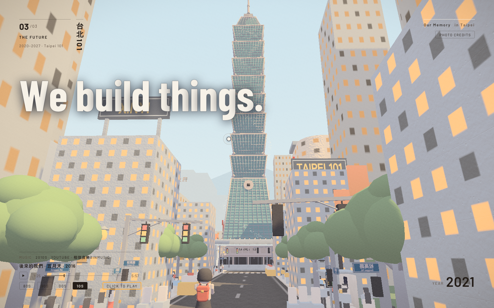
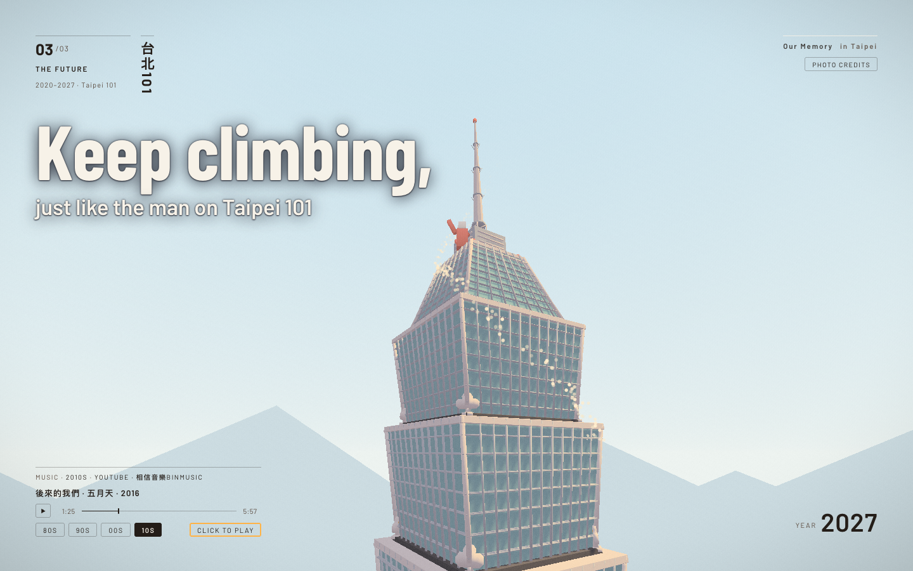
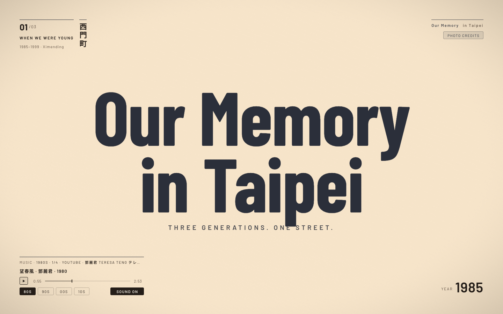
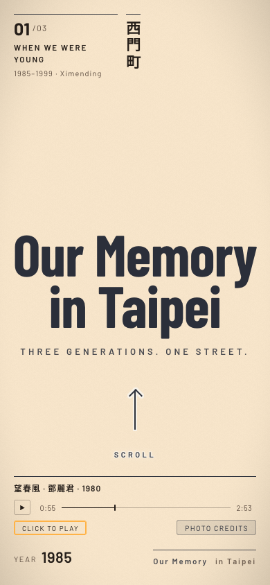
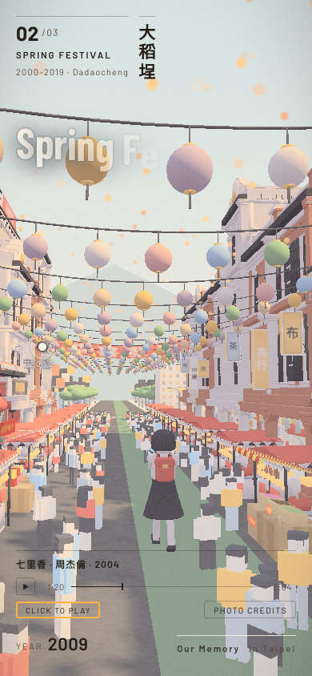

Decision brief · Our Memory in Taipei
Then park it. Keep it as a finished portfolio piece and use it as the demo in Landmark-Online-Space's demand test (pitch 10 place operators). Build nothing more until 2 of 10 operators answer. inferred
- APark + use as demo — about 1 hour of your time, no code. Step one: turn Pages on.
- BContinue — merge the walkable square with visitor lanterns, about 2–4 days guess, before any buyer said yes.
- CClose — archive the repo in minutes, and lose your best demo.
Recommendation: A. The pitch gets real proof at zero build cost, and building waits for a buyer.
A finished demo is worth more as proof in a pitch than as a product to keep building. inferred
Glossary
- branch
- A separate line of work in the code, kept apart from the main version until it is ready.
- merged
- A branch's changes have been added into main. A merged branch holds nothing new.
- main
- The main branch: the official version of the code. Here, what the public site would show.
- GitHub Pages
- GitHub's free web hosting. It turns a repo into a public website, but only after you switch it on in Settings.
- worktree
- An extra folder on your disk with a copy of the code on another branch, so two things can be worked on at once.
- demand test
- Asking real buyers before building, to see if anyone wants it. Here: pitch 10 operators, pass if 2 answer.
- Supabase
- An online database service. The walkable-square branch stores visitors' memories there.
Style #66 Chinese ink wash (水墨) · reference: The Boat (SBS) ↗ · award page: FWA case ↗ (site opened live on 2026-11-01)
Layout from The Boat: a full-screen ink-wash title, a dark brushed strip of chapter numbers on the right edge, small controls (sound, auto scroll, full screen) in the bottom-left corner, and a "scroll" cue at the bottom centre. Here: 8 chapters on the right strip, auto scroll bottom-left.
Interaction from The Boat: scrolling drives the story. Tilted, ink-bordered comic panels slide and wipe in one after another, with captions set at an angle beside them. Here it runs on chapter 2 (the project's story) and chapter 7 (the three options). Press "auto scroll" to let it play.
v1 · 2026-11-01 · first version
Where it stands
Scroll down. Each panel is one fact about the project, in order.
aa9afcd on 2026-09-25. measured
Three districts, three generations, one scroll.46ea823, a link cleanup. The issues were not copied. Public, 0 stars, 0 forks. measured
The code moved. The site did not.aa9afcd, one commit behind yours. measured It runs the same page code. inferred
The work itself still stands.end of the story
Live site
Checked today in headless Chromium (SwiftShader, no real GPU).
curl -sI https://cjthewestie.github.io/Our-Memory-in-Taipei/ → HTTP/2 404. gh api repos/cjthewestie/Our-Memory-in-Taipei/pages → Not Found. The repo has 0 deployments. measured
Fix: Settings → Pages → Deploy from branch main, / root. About 2 minutes. Public, so your call. inferred

What works, on Joy's copy (same code)







Numbers (Joy's copy, not a real GPU)
| First draw | DOM ready | Load event | Requests | Size | |
|---|---|---|---|---|---|
| Desktop | 1.2 s | 2.9 s | 15.0 s | 78 | ~2.97 MB |
| Phone | 1.2 s | 2.8 s | 13.4 s | 69 | ~2.96 MB |
All numbers measured. The slow load event is likely held open by the YouTube player. inferred
Console: 2 errors. A 404 for asset/music/private/manifest.js, which is ignored on purpose, so an expected probe inferred; and the YouTube embed's doubleclick redirect. The rest are warnings. measured
The YouTube embed calls googleads.doubleclick.net. measured Ads ride on the music; that money does not go to you. inferred
Branches
The 4 named branches are all already in main. Safe to delete — your call.
Checked per branch with:git rev-list --count main..origin/<b>git cherry main origin/<b>git merge-base --is-ancestor origin/<b> main
| Branch | Tip | Not in main | In main | Merged as |
|---|---|---|---|---|
issue-1-part-1 | 06e01da · 09-21 | 0 | yes | PR #2 |
issue-3-texture | 327b4d7 · 09-23 | 0 | yes | PR #6 |
issue-5-models | b2fd197 · 09-23 | 0 | yes | PR #14 |
issue-music-player | da0117f · 09-23 | 0 | yes | PR #7 |
PR numbers from gh pr list -R Joy-shen123/Our-Memory-in-Taipei --state all, all merged. measured
Other unmerged work
games/. A different product sitting in this repo. measuredresources/harry-potter-book-1 folder for "a local copy of the book". Unrelated to this project. measured A copyrighted book does not belong in a public repo; the folder has a .gitignore, so the book itself is likely not committed. inferred~/Documents/CJ-project-vault/_worktrees/Our-Memory-in-Taipei/: arcane-chapter1 (95 MB), blender-redhouse (228 MB), blender-scene-export (203 MB), perf-and-ads.brief-only (8 KB). Git no longer knows them (the repo was re-cloned). arcane-chapter1 holds the only copy of asset/blender/paint_tiles.py, asset/tex/ and BRIEF-arcane-chapter1.md, a painted-texture test. The other two are older snapshots. measuredIssues
On Joy-shen123/Our-Memory-in-Taipei: 3 open, 13 closed. Two of the three look already fixed.
0c81073 "the photograph panel closes on scroll, Escape and a tap outside", and later phone fixes. measured Likely fixed, issue left open. inferredc67d647. measured Still open, and large. inferred7798851 "three landmark photographs without the surveyors' colour card". measured Likely fixed, issue left open. inferredMoney paths
Who could pay, from strongest to weakest.
This page is a finished, real-place, three-district piece: your strongest proof for that pitch. inferred
Options
Scroll. Each option comes in as a panel: cost, gain, worst case.
A · Park + use as demo
B · Continue
C · Close
Recommendation: A. What would change it: an operator asks to walk around the space — then B is worth the days. inferred
What CJ decides
Only you can make these. One line each.
- Turn on GitHub Pages for cjthewestie/Our-Memory-in-Taipei (Settings → Pages → main, /)? Without it, the demo link in any pitch is a 404.
- Direction: A, B or C?
- Delete the 4 merged branches? All checked: already in main.
- Move kind-euler (Godot game) and amazing-hamilton (book folder) out of this public repo?
- Bring Joy's 10-28 phone fix into main? Pushing main deploys the public site.
- Delete ~526 MB of orphan worktree folders? arcane-chapter1 has the only copy of paint_tiles.py.